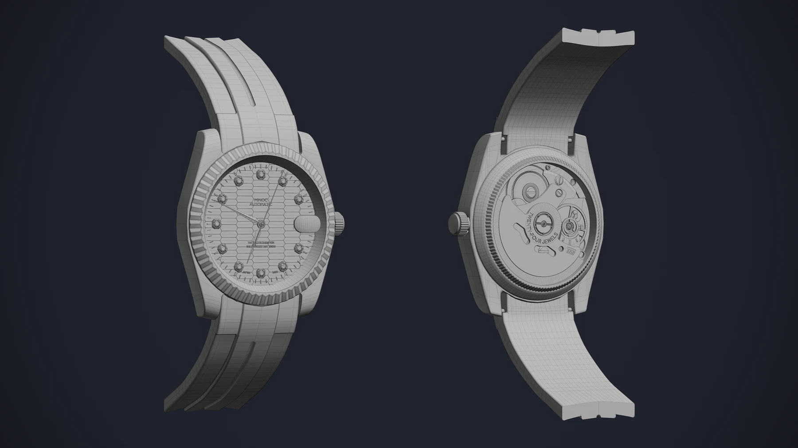
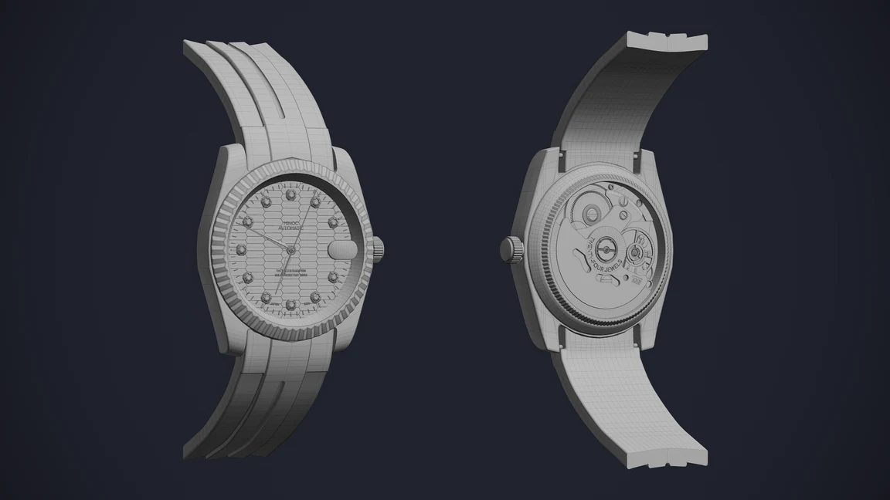
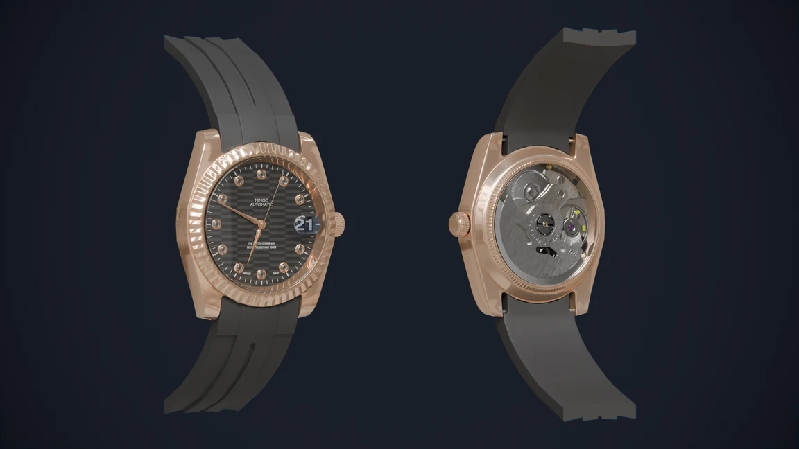

MINOC / STAR LIGHT AUTOMATIC
제품 사진을 바탕으로 시계의 외형과 작동을 재현한 3D 제품 영상.

01 / Product film
제품의 형태와 움직임
02 / Modeling
제품 사진 기반 모델링
제품 사진을 바탕으로 시계의 외형과 내부 부품을 모델링했습니다.

03 / Drivers & animation
Blender Driver를 활용한 애니메이션
Blender Driver로 시곗바늘과 뒷면 부품의 움직임을 구현했습니다.


ROLE & CREDITS
담당 작업
모델링부터 최종 영상 편집까지 담당했습니다. 제품명과 디자인의 권리는 MINOC에 있습니다.